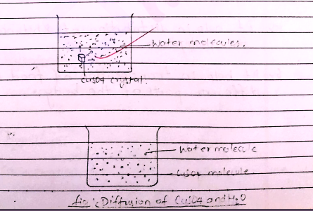

Diffusion
The process of movement of molecules, ions, gases, solutes from their higher concentration to lower concentration is called diffusion. Ex. If a bottle of perfume is opened in a closed room the perfume spread by diffusion.
The process of movement of molecules, ions, gases, solutes from their higher concentration to lower concentration is called diffusion. Ex. If a bottle of perfume is opened in a closed room the perfume spread by diffusion.
When a crystal of Copper sulphate is placed in beaker containing water, a dense blue colour is seen around the crystal. It decrease with increase in distance from the crystal representating the diffusion of copper sulphate molecules in water. Here, the CuSO₄ mol. move towards CuSO₄ finally the mole of both water and CuO₄ are distributed equally throughout the solution. 
The pressure developed by the diffuring particles from the area of higher to lower concentration is called diffusion pressure
 The process of movement of water or solvent from their
higher concentration to lower concentration through semi-permiable membrane is
called osmosis.
The process of movement of water or solvent from their
higher concentration to lower concentration through semi-permiable membrane is
called osmosis.
Types of osmosis :-
When a living cell placed inside hypotonic solution, water enters inside the cell and cell be come turgid is called and Endosmosis.
The outward movement of water from a cell when it is placed in hypertonic solution is called Exosmosis. By this process cell becomes flucid.
It is the solution in which the concentration of solute is lower then the concentration of solvent.
It is the solution in which the. Concentration of solute is Concentration of solvent.
In this type the concentration of both solute and solvent are equal
A large sized potato,sugar solution petridiscs and two pins.
Peel off the skin of large sized potato with knife and cut its one end to make flat base.Make a hole or cavity in the potato by using knife and fill the sugar solution in to the cavity nd make the initial level.The whole apparatus?potato placed inside a petridiscs conting water and leave it about few hours
After sometime the level of sugar solution in the cavity raise up this is because of movement of water through higher concentration to lower concentration.Thish is called Osmosis .
The process of shrinkage of protoplasma of plant cell due to loss of water when it is placed inside hypertonic solution. The process is called plasmolysis and cell is called plasmolyred cell
When a plasmolysed cell placed inside hypertonic solution water enters into the cell and cell become turgid. The process is called Deplasmolysis
The process of increase in volume or diameter of a solid is called imbibition. substance by seaking water is called imbibition. Eg:- Swelling of door and windows in Winter Season, swelling of seeds/gum/etc.
Living cell consists of plasma membrane and cell sap. Plasma membrane is really not a
semi-permiable membrane and it allow to pass across it small amount of solute also so it is
called selective permlable membrane When a living cell placed in water on hyper-tonic
solution water enters the cell sap by endasmas As a result of entry of water into the cell
sap a pressure develops inside the protoplasm against the cell wall And cell became turgid
thes pressure as called turger pressure.
To balance the turger pressure the cell also exert a pressure, the pressure exerted by the
cell wall against the expand protoplasm is called wall pressure.
The amount of solute by which the diffusion pressure of a solution is lowered than the pure
solvent or water is called diffusnion pressure deficit(DPD). Diffusion pressure of a Jolvent of
maximum As the solute is added the diffusion pressure of a solution is decreased. If the DPD of
greater the cell try to absorb water. In other word, it can be said that DPD as the index of
water sucking ability of a cell. So it is called suction. pressure. Suction pressure is defined
as the force per unit area with which water enter in a cell. The term DPD wasw given by Bs Mayer
in 1958.
DPD=OP-TP(osmatic press)
DPD=OP-O
DPD=O(OP-TP)[cell is turgid]
TP=WP=0[cell turgid]
TP>WP[cell brust ]
WP>TP [CELL Flaceid]
The pressure required to stop the net movement of pure water into a solution through plasma membrane is called osmotic pressure. It is measured by atmosphere. The measure ment fools name asmometer. The movement of solvent from their higher concentration or lower osmotis pressure to tower Concentration of higher osmotic pressure takes place in the process of osmosis. The osmotic pressure of pure water is zero.